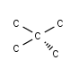

Parity
Introduction
Parity is a general type of specification of chirality.
The two most commonly used types, Tetrahedral Parity and Allene-like Parity, is implemented.
Tetrahedral Parity
Global Parity
A parity value 0 is used for atoms, which cannot have parity.
An atom has nonzero global parity, if the following conditions are met:
- Tetrahedral central atom has parity, if
- 4 different types of ligands around the central atom,
- implicit hydrogens and lone pairs also considered as ligands,
- implicit and explicit hydrogen does not count as different kinds of ligands.
- Tetrahedral central atom in a ring has parity, if
- the central atom has 2 different kinds of ligands outside the ring,
- if the graph invariant of the ring is not the same in the
two sides of the central atom,
- if the graph invariant of the ring is the same in the
two sides of the central atom, but
- the ring contains even numbers of atoms (including the parity central atom),
- there is an atom with nonzero parity in the opposite side of the ring:


- Atoms N, P and S in ring have parity, if
- they are bridge atoms.

- N has parity in a 3 membered ring,
- if the graph invariant of the ring is not the same in the
two sides of the nitrogen atom.
The value of global parity is determined as follows [1].
- Number the atoms around the stereocenter according to
the position in the atom block.
- Hydrogen gets the highest value, in this case 4.
- View the molecule such, that the atom that has the highest number is behind the
plane formed by the other three atoms.
- Now, the three atoms forming the plane may arrange
- either clockwise, in which case the general parity of the stereo center
is called ODD,
- or counterclockwise, in which case the general parity of the stereo center
is called EVEN.
Local Parity
An atom have nonzero local parity, if
- number of implicit and explicit H < 3,
- number of implicit H < 2.
The determination of he local parity is similar to that of global parity:
- Number the atoms around the stereocenter according to
the atom number (position in the atom block).
- Hydrogens get the highest values:
a constant number is added to the atom number of all the H atoms.
- View the molecule such, that the atom that has the highest number is behind the
plane formed by the other three atoms.
- Now, the three atoms forming the plane may arrange
- either clockwise, in which case the local parity of the stereo center
is called ODD,
- or counterclockwise, in which case the local parity of the stereo center
is called EVEN.
For example, the molecule depicted below has nonzero local
but zero global parity value:

Allene-like Parity
An atom can have allene-like parity if the following condition holds:
- there are equal numbers of double bonds in each side of the central atom,
- there are at least two different ligands on both terminal atoms.
In connection with allene-like parity local and global types are not
differentiated.
Allene like parity is defined as follows.
- Number the two pairs of atoms which connect to the central atom
through one single and odd number of double bond with
1, 2, 3 and 4 in order of increasing atom number
(position in the atom block).
- Hydrogen atom should be the highest numbered atom, in this
case atom 4.
- If the molecule contains two hydrogen atoms,
then that one gets the smaller value (3),
which is on the same side of the central atom as
the ligand with higher atom number.
- View the molecule such, that the atom that has the highest number
is behind the plane formed by the other three atoms.
- Now, the three atoms forming the plane may arrange
- either clockwise, in which case the parity of the stereo center
has the value 1,
- or counterclockwise, in which case the parity of the stereo center
has the value 2.
References